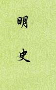

| 历史史籍 > |
| 明史 |
| 作者：张廷玉 主编 |
|
明史，纪传体断代史，二十四史最后一部，本纪24卷、志75卷、列传220卷、表13卷、共332卷。记载自明太祖朱元璋至明思宗朱由检二百多年的历史。 清顺治二年（1645）设立明史馆，纂修明史，因国家初创，诸事丛杂，未能全面开展。康熙四年（1665），重开明史馆，因纂修《清世祖实录》而停止。康熙十八年，以徐元文为监修，开始纂修明史，乾隆四年（1739）张廷玉最后定稿，进呈刊刻。 从第一次开馆至最后定稿刊刻，前后经历九十多年，是官修史书历时最长的一部。史家多以为《明史》是一部水平较高的史书，但其中有些列传实在过于繁冗，人物一拎一串，主次难分。 [2019年4月，重新整理] |
 |